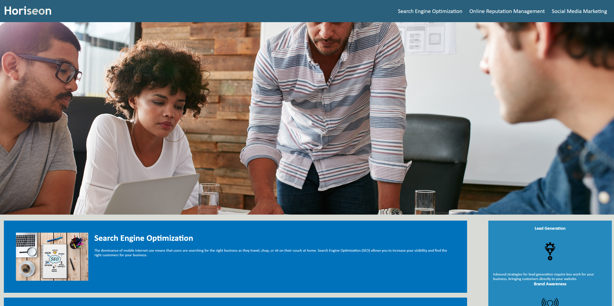
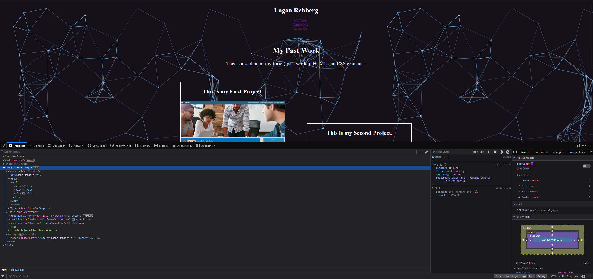

My Past Work
This is a section of my (brief) past work of HTML and CSS elements.
This is my First Project.
My very first project was a refactoring of starter code given to me. It consisted of many unsemantic HTML and CSS elements which I had to reorder and reorganize. For better viewing and to view the code, go to my github pages.
This is my Second Project.
This webpage is my second project. I had to create a landing page for my portfolio from scratch for potential employers to view. It consists of basic HTML and CSS elements such as font sizing and font families. It also contains more advanced CSS such as Flexbox. Because this section is contained in my second project, I added an image of the devtools. You can access it by right clicking anywhere on the webpage, and clicking inspect.
Contact Me
My Contact Info
About Me
This is a small paragraph about me